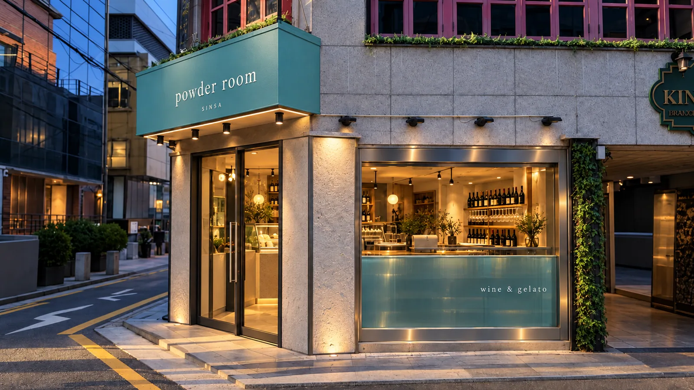
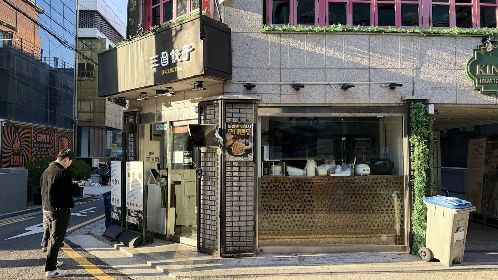
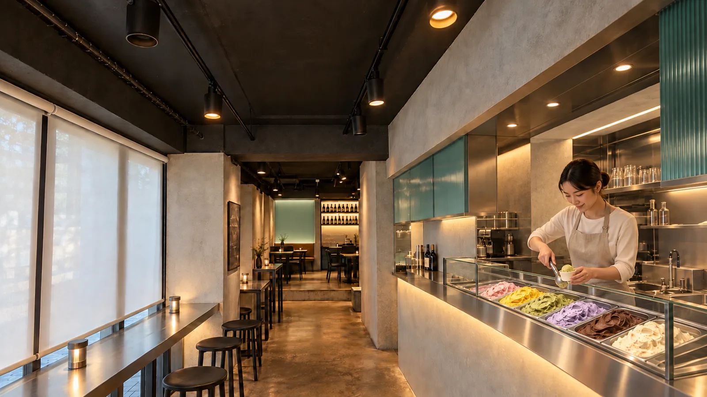
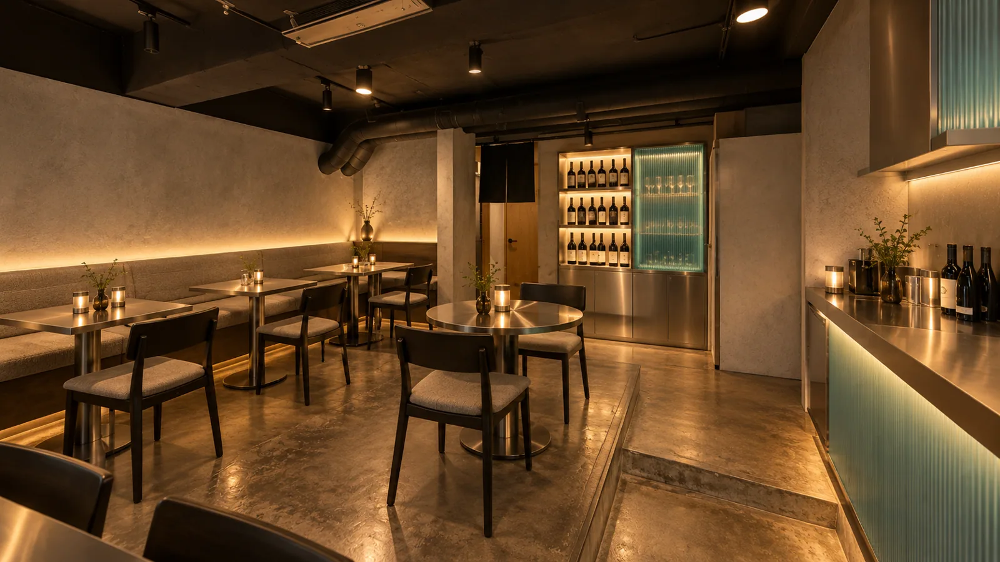
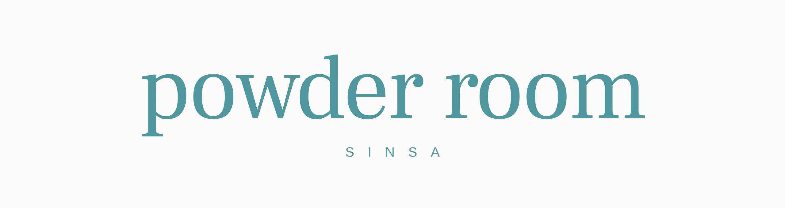
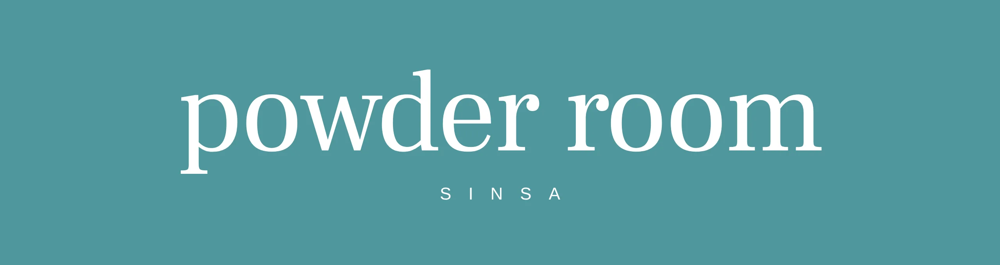
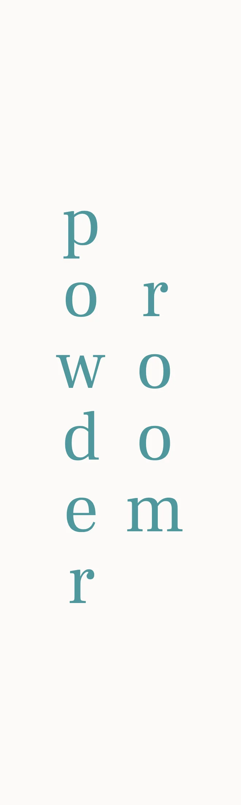
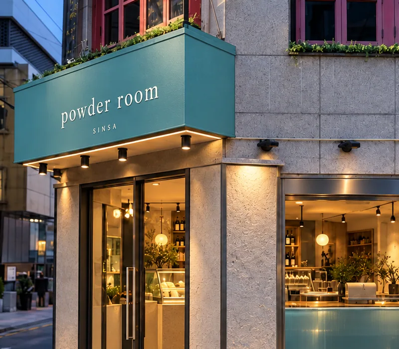
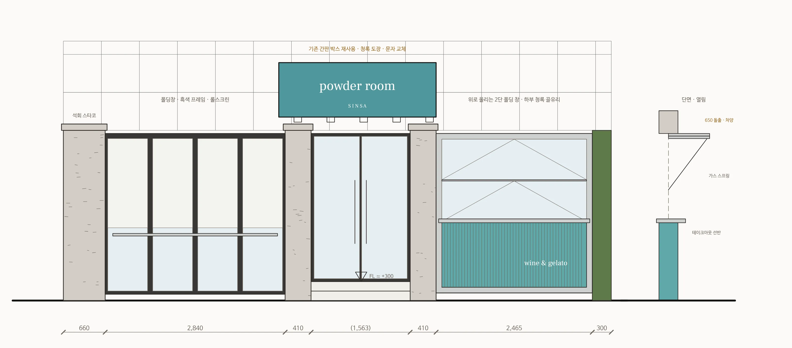

01Corner
청록 간판, 빛나는 창
기존 간판 박스를 그대로 살려 브랜드 청록으로 칠하고 흰 세리프 문자를 올립니다. 벽돌 패턴 기둥은 석회 스타코로 덮어 바닥 업라이트로 비추고, 오른쪽 주방 창은 위로 올리는 2단 폴딩 창으로 바꿔, 열면 차양이 되고 아래 스테인리스 선반이 테이크아웃 창이 됩니다. 창 하부 청록 골유리에는 ‘wine & gelato’.
무채색 방에, 청록은 빛으로만. 길가는 낮의 젤라또, 한 단 위는 밤의 와인.
길모퉁이의 청록 간판에서 시작해 홀과 젤라또 패스, 주방을 지나 한 단 위의 파우더룸까지 걸어 들어가는 순서로 엮은 42초 영상입니다.
문래점에 이은 파우더룸의 두 번째 매장입니다. 신사동 가로수길, 길 두 개가 만나는 1층 코너의 중식 교자집 자리를 와인과 젤라또를 파는 가게로 바꿉니다.
깊이 11.5m의 긴 매장입니다. 앞은 폭 4.3m, 안쪽은 폭 5.4m로 넓어지고 바닥이 한 단 높습니다. 벽은 회색 석회 스타코, 천장은 검정 노출, 바닥은 기존 바닥을 연마해 살립니다. 브랜드 청록은 칠하지 않고 골유리와 백라이트로만 써서, 불이 켜질 때 비로소 색이 됩니다.
뺀 것주방 후드·덕트(가열 조리 없음) · 벽돌 패턴 필라스터 마감(→ 스타코) · 주방 창 금속 타공 패널 · 칸막이 상부 진열 니치(→ 골유리 띠)


기존 간판 박스를 그대로 살려 브랜드 청록으로 칠하고 흰 세리프 문자를 올립니다. 벽돌 패턴 기둥은 석회 스타코로 덮어 바닥 업라이트로 비추고, 오른쪽 주방 창은 위로 올리는 2단 폴딩 창으로 바꿔, 열면 차양이 되고 아래 스테인리스 선반이 테이크아웃 창이 됩니다. 창 하부 청록 골유리에는 ‘wine & gelato’.

왼쪽은 롤스크린 앞 스테인리스 창가 바, 오른쪽은 기존 칸막이를 열어 만든 패스 창입니다. 그 자리에 젤라또 디핑 케이스를 앉혀 직원은 주방 안에서 떠 주고, 손님은 홀 쪽 선반 앞에서 고릅니다. 상부 청록 골유리 띠와 케이스 아래 웜 라이트가 홀의 조명을 대신합니다.

바닥이 150 높은 안쪽 방을 와인 방으로 씁니다. 그레이 패브릭 긴 의자 아래와 와인 장 선반에만 빛을 두고, 정면에는 민트 백라이트 사인 벽. 브랜드 이름이 그대로 방이 됩니다.
낮에는 테이크아웃 창과 창가 바의 젤라또, 밤에는 단 위 파우더룸의 와인. 한 가게가 시간에 따라 앞과 안쪽을 바꿔 씁니다. 실내 둘러보기 ↓
외관부터 파우더룸까지 디자인 방향 이미지를 모았습니다. 누르면 크게 볼 수 있습니다.



문래점과 같은 소문자 세리프 ‘powder room’과 청록(#4F979D)을 그대로 씁니다. 가로형은 간판 박스와 메뉴에, 세로형(2026.09 사인 시안 B안)은 기둥처럼 세로로 긴 자리에 씁니다.
워드마크는 원본 서체와 유사한 무료 서체로 다시 그린 것입니다. 원본 로고 파일로 교체 예정.

모서리 출입구 위의 기존 간판 박스는 구조를 살리고 청록으로 칠합니다. 흰색 ‘powder room / SINSA’ 문자와 하부 다운라이트 여섯 개. 해가 지면 간판과 주방 창 하부 골유리가 같은 색으로 빛납니다. 주방 창은 위로 올리는 2단 폴딩 창 — 낮에는 열어 차양 아래에서 젤라또를 건넵니다.

디자인 방향 이미지 · 석회 스타코 · 흑색 노출 천장 · 스테인리스 · 청록 골유리
천장은 어둡게 두고 빛은 선반 아래, 유리 뒤, 테이블 위로만 보냅니다. 앞에서 안으로 갈수록 조도를 낮추고, 안쪽 방에서는 민트 사인 벽과 와인 장이 가장 밝은 면이 됩니다.
수량과 조도는 디자인 단계의 목표값입니다. 조명 계획 확정 후 시뮬레이션으로 다시 계산합니다.
거친 흙손 질감 · 무광
홀 벽 · 외부 필라스터
플루티드 유리 · 뒤 간접광
패스 상부 띠 · 주방 창 하부
STS304 · 1.2T
패스 선반 · 창가 바 · 창 프레임
무광 흑색 도장 · 블랙 트랙 스폿
전 구역 천장
연마 후 투명 코팅 · 브라운 톤
바닥 전체 (단 포함)
유백 아크릴 + LED · 세리프 문자
파우더룸 정면
흑색 스틸 선반 · 선반 아래 LED
파우더룸 · 거리 창 바
방염 원단 · 하부 간접광 · 스테인리스 테이블
파우더룸 좌석
| No | 구역 | 구성 |
|---|---|---|
| 01 | 창가 바 | 스테인리스 상판 · 흑색 스툴 5석 · 롤스크린 |
| 02 | 젤라또 | 패스 개구부 안 디핑 케이스 12구 · 유리 가드 · 홀 쪽 스테인리스 주문 선반 |
| 03 | 거리 창 바 | 도로① 창 안쪽 와인 선반 · 포스 · 테이크아웃 응대 |
| 04 | 패스 | 기존 칸막이에 길이 2.4m 개구 · 디핑 케이스 + 홀 쪽 선반 · 상부 청록 골유리 |
| 05 | 주방 | 패스 뒤 디핑 케이스 · 배치 프리저 · 제빙기 · 테이블 냉장고 · 싱크 (문래점 장비 기준) · 후드 철거 · 도로① 위로 올리는 폴딩 창(테이크아웃) |
| 06 | 셀러 앞 | 하이 테이블 2개 4석 · 와인 셀러 2대 |
| 07 | 파우더룸 | 단 +150 · 패브릭 긴 의자 + 스테인리스 테이블 5개 14석 · 민트 사인 벽 · 와인 장 · 골유리 글라스장 |
| 08 | 화장실 · 창고 | 위치 유지 · 문은 벽과 같은 스타코 마감 |
모두 국내 유통 자재 기준입니다. 재료 칸은 질감 표현용 그림이며, 실제 샘플이 정해지면 사진으로 바꿉니다.
실측 평면 위에 그린 배치안입니다. 앞쪽은 창가 바, 칸막이의 패스 개구에 젤라또 디핑 케이스, 그 뒤가 주방, 통로 끝 한 단 위가 파우더룸입니다.
도면을 누르면 크게 볼 수 있습니다. 현황 실측도의 주황 ( ) 치수는 추정값입니다.
재실측 · 장비 확정
평면 · 천장 · 입면 도면
견적서 (별도)
조명 시뮬레이션 · 홈페이지 갱신